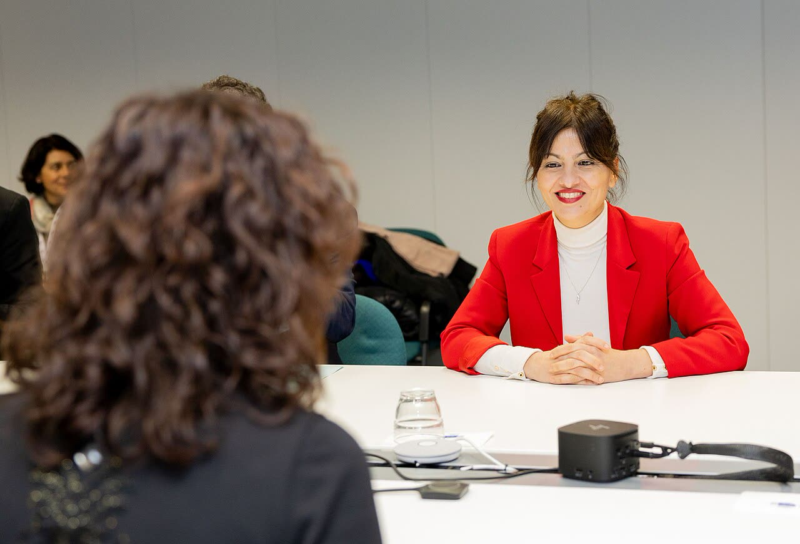

Spagna, il governo ipotizza lo stop a TikTok per i video di abusi su minori
Gli abusi vanno perseguiti, ma spegnere TikTok per tutti è sproporzionato: si colpisce chi commette il reato e chi non rimuove.
Redazione Contrappunto · aggiornato il 09.11.2026

.jpg){kind=link}
Lunedì 9 novembre 2026 il Ministero spagnolo della Gioventù e dell'Infanzia, guidato dalla ministra Sira Rego, ha scritto alla Fiscalía General del Estado (la procura generale dello Stato) dopo un'inchiesta di Maldita.es, una testata spagnola di verifica dei fatti, secondo cui su TikTok circolano oltre mille video di abuso sessuale su minori. Nello stesso scritto il ministero «plantea la posibilidad» di sospendere i servizi di TikTok in Spagna «se così si ritenesse opportuno». Non è una decisione presa: la ministra ha chiesto anche un incontro urgente con i rappresentanti di TikTok in Spagna.
Vedi di più: 3 parole spiegate, cosa si racconta
Cosa si raccontaLe testate spagnole e le agenzie riportano l'inchiesta di Maldita.es e la mossa del governo senza metterle in dubbio: TikTok non rimuove abbastanza e il ministero chiede alla procura di agire. El País va oltre: per il giornale TikTok viola già la legge europea sui servizi digitali. ABC attribuisce la porta aperta allo stop direttamente alla ministra, mentre EFE ed Europa Press parlano di «fonti del dipartimento». [La Vanguardia] [El País] [ABC] [EFE (via Infobae)] [Europa Press (via Infobae)]
- Maldita.es
- Fondazione giornalistica spagnola di verifica dei fatti; ha condotto l'inchiesta in 35 giorni, tra l'11 settembre e il 15 ottobre secondo La Vanguardia, e ha denunciato le prove alla Fiscalía de Criminalidad Informática, la procura specializzata nei reati informatici (La Vanguardia, Maldita.es).
- Fiscalía General del Estado
- Il pubblico ministero spagnolo: indaga e può rivolgersi ai giudici. Non decide da sola una sospensione (i testi letti non dicono chi potrebbe disporla).
- Digital Services Act (DSA)
- La legge europea sui servizi digitali: obbliga le grandi piattaforme a limitare i rischi per i minori e a rimuovere «con prontitud» i contenuti illegali (El País). Ne abbiamo scritto il 6 novembre a proposito del feed «Per te» di TikTok.
- Il ministero di Sira Rego ha chiesto alla Fiscalía di indagare su TikTok e valuta di sospenderne i servizi in Spagna: non è una decisione presa.
- L'inchiesta di Maldita.es parla di 1.183 contenuti di abuso su minori e 48 milioni di visualizzazioni; TikTok dice che questo materiale è vietato e accusa Maldita di non condividere i dati.
- Nessuno dei testi letti indica su quale norma si fonderebbe la sospensione.
El País, La Vanguardia e le agenzie EFE ed Europa Press raccontano l'inchiesta di Maldita.es: oltre mille video di abusi su minori, 48 milioni di visualizzazioni. Il ministero di Sira Rego ha scritto alla Fiscalía e valuta lo stop ai servizi di TikTok se lo si ritenesse opportuno; nessun testo dice su quale legge. La ragione del governo è forte: su 50 video segnalati TikTok ne ha tolti cinque (secondo Europa Press, più della metà di quelli respinti è stata rimossa entro 72 ore). Per questo servono indagini e sanzioni a chi non rimuove. Ma spegnere un servizio usato anche da molti adulti è sproporzionato, quando esistono già il reato, la Fiscalía e il DSA. Quindi: si colpisce chi commette il reato e chi non rimuove, non si chiude la piazza. [4] [5] [1] [2] [3] [7]
La verifica punto per punto5 passaggi, 7 fonti
Qui sotto ogni cosa scritta sopra, una per una, con le fonti. Confermato: lo dice un documento originale o più fonti lette. Plausibile: lo riportano fonti serie, ma non abbiamo letto l'originale. Discordante: le fonti danno numeri diversi, e diciamo quali. Ipotesi e Opinione sono il nostro ragionamento, separato dai fatti.
Chi lo dice e su quale base
Lunedì 9 novembre il Ministero della Gioventù e dell'Infanzia ha inviato uno scritto alla Fiscalía General del Estado perché adotti le misure necessarie per la protezione dei minori e, secondo il ministero, «plantea la posibilidad de paralizar los servicios de la plataforma en España, si así se considerase oportuno» (EFE, La Vanguardia). Per EFE ed Europa Press lo dicono «fonti del dipartimento» guidato da Sira Rego; ABC, di cui abbiamo solo il testo visibile, attribuisce la porta aperta alla ministra, che ha scritto su Bluesky «Los hechos son gravísimos». La ministra ha chiesto anche un incontro urgente con i rappresentanti di TikTok in Spagna (EFE, Europa Press, La Vanguardia). Nessuna delle fonti lette indica una norma su cui si fonderebbe lo stop, né dice chi potrebbe disporlo, né ne annuncia una decisione.
Cosa dice l'inchiesta
Maldita.es afferma di aver trovato in 35 giorni oltre mille video e immagini di abuso su minori (1.183 secondo El País, 1.182 per La Vanguardia), pubblicati da circa 200 profili e con 48 milioni di visualizzazioni (La Vanguardia, ABC, El País). Ne ha segnalati 50 a TikTok: la piattaforma ne ha rimossi 5 (10%) e ne ha bloccati 13 solo in Spagna; nel 58% dei casi ha risposto che non violano né la legge né le sue norme (Europa Press, ABC). Tre giorni dopo le segnalazioni, il 40% degli account era ancora attivo (El País). Sono dati di Maldita.es: nei testi letti la Fiscalía non ha ancora detto nulla. Per El País, TikTok viola il DSA, che chiede di limitare i rischi per i minori e di agire «con prontitud» sui contenuti illegali.
Le cifre non coincidono
Le testate non contano la stessa cosa: i profili che pubblicano il materiale sono circa 200 (231 account analizzati secondo La Vanguardia), mentre i «potenziali pedofili» che commentano o condividono sono oltre 20.000 per EFE e oltre 26.000 per El País (di cui circa 7.700 in spagnolo). Quanti account restavano attivi dipende dal momento: 59% al 15 ottobre (La Vanguardia), 40% a tre giorni dalla denuncia (El País), 38% (ABC).
Cosa risponde TikTok
TikTok, in una nota riportata da El Español, dice che il materiale sessualmente esplicito con minori è «categoricamente prohibido» e che «mantener la plataforma como un lugar seguro... es nuestra máxima prioridad»; aggiunge che serve «una respuesta colectiva» e invita Maldita a condividere i risultati completi, perché altrimenti non può localizzare e rimuovere il materiale. Questa risposta ci arriva solo da El Español (testo visibile, abbonamento): La Vanguardia ed El País dicono soltanto che TikTok ha chiesto a Maldita più informazioni, senza rispondere sui propri meccanismi di protezione dei minori; per ABC, a mezzogiorno TikTok non si era espressa.
Il nostro punto
La tutela dei minori è sacrosanta, e se i numeri di Maldita.es reggono davanti a un giudice, TikTok deve rispondere di non aver rimosso: l'abuso è un reato e chi non toglie un video dopo la segnalazione ha una responsabilità. Ma spegnere un servizio per tutti punisce chi non c'entra, e un precedente così in mano al governo del momento è un rischio per la libertà di tutti. Sanzioni, indagini sui responsabili e DSA hanno più senso della chiusura: si colpisce chi commette il reato e chi non rimuove, non si spegne la piazza.
Fonti7, tutte con il link
- Una investigación periodística encuentra más de 1.000 contenidos de abuso infantil en TikTok (9 novembre 2026, Francesc Bracero) (La Vanguardia) · consultata il 09.11.2026
- Una investigación española descubre miles de nuevos vídeos y perfiles pedófilos en TikTok (9 novembre 2026, Jordi Pérez Colomé) (El País) · consultata il 09.11.2026
- El Gobierno se plantea paralizar los servicios de TikTok en España por permitir vídeos de abuso sexual infantil (9 novembre 2026) (ABC) · consultata il 09.11.2026
- El Gobierno pide a Fiscalía investigar presuntos casos de abuso sexual infantil en TikTok (dispaccio EFE su Infobae, 9 novembre 2026) (EFE (via Infobae)) · consultata il 09.11.2026
- El Gobierno plantea paralizar TikTok ante denuncias por posibles videos de abuso sexual infantil en la plataforma (dispaccio Europa Press su Infobae, 9 novembre 2026) (Europa Press (via Infobae)) · consultata il 09.11.2026
- El Gobierno plantea paralizar TikTok ante denuncias por posibles videos de abuso sexual infantil en la plataforma (9 novembre 2026) (El Español) · consultata il 09.11.2026
- The investigation: TikTok's predatory home feed (Maldita.es, 9 novembre 2026) (Maldita.es) · consultata il 09.11.2026